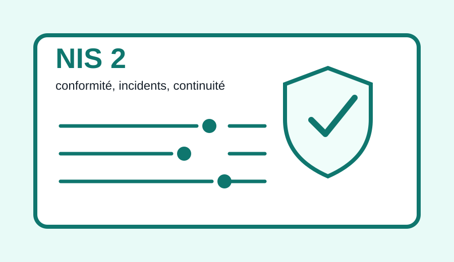
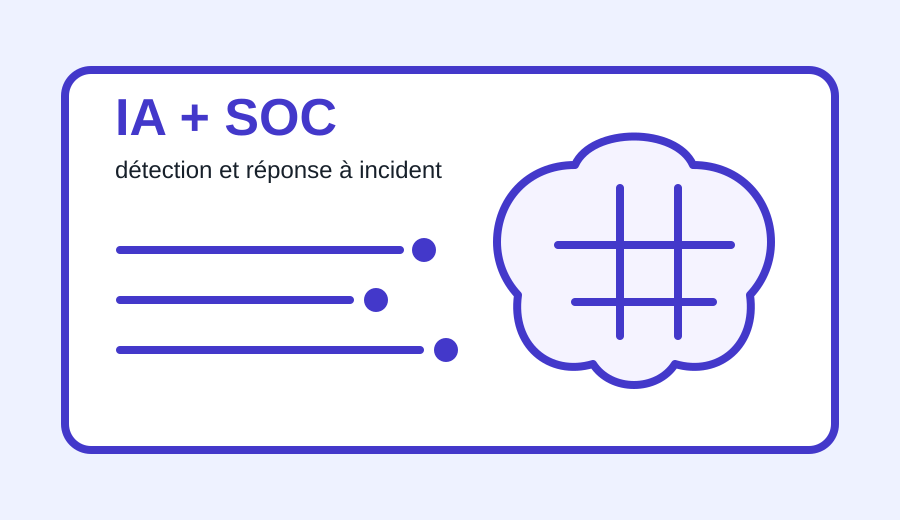
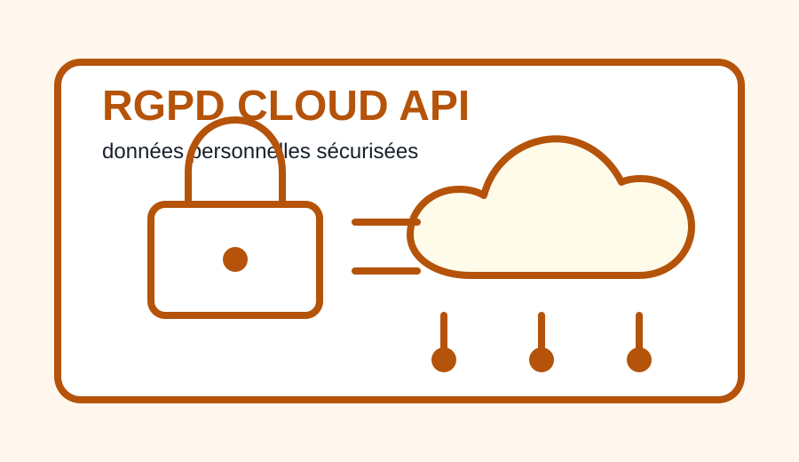
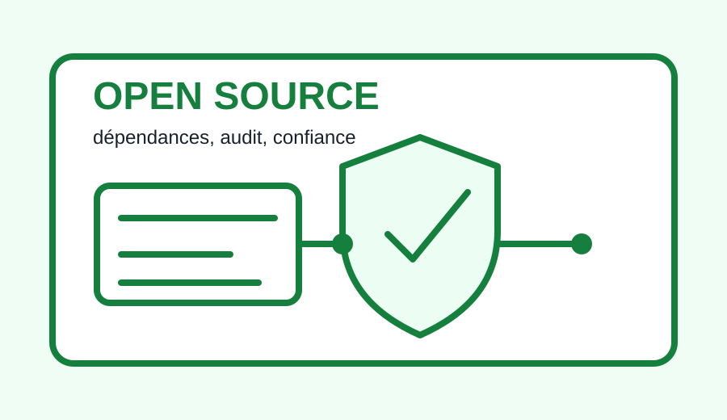

18 octobre 2024
NIS 2 : structurer la sécurité des organisations
La directive NIS 2 élargit le périmètre des entités concernées par les obligations cyber. Pour moi, le point important est que la sécurité devient une organisation complète : gestion des accès, sauvegardes, continuité, procédures, traitement des incidents et preuves de conformité.
Dans mon parcours SISR, cette veille me pousse à mieux documenter les architectures, vérifier les sauvegardes et penser la sécurité dès la conception.
Source visitée : ANSSI - La directive NIS 2

7 février 2025
IA : développer la confiance par les risques cyber
L'ANSSI explique que les systèmes d'IA doivent être intégrés avec une approche par les risques. Une IA peut aider à analyser des alertes ou accélérer une réponse à incident, mais elle peut aussi exposer des données ou introduire de nouvelles dépendances.
Ce que j'en retiens : avant d'utiliser un outil IA en entreprise, il faut cadrer les données envoyées, les droits d'accès, les journaux, les validations humaines et la sécurité de la chaîne technique.
Source visitée : ANSSI - Approche par les risques cyber pour l'IA

26 mars 2024
RGPD : cloud, API et sécurité des données
La CNIL a publié une nouvelle édition de son guide de sécurité des données personnelles. Les nouvelles fiches sur le cloud, les applications mobiles, l'IA et les API sont directement liées aux missions SISR, car chaque service exposé doit être configuré avec des droits cohérents et une traçabilité suffisante.
Ce que j'en retiens : limiter les accès, chiffrer quand c'est nécessaire, suivre les comptes, sécuriser les sauvegardes et conserver une documentation exploitable.
Source visitée : CNIL - Guide sécurité des données personnelles 2024

9 février 2026
Open source : sécuriser les dépendances
Cette veille porte sur la sécurité de l'open source. L'ANSSI met en avant une politique structurée autour de la publication, de la contribution, du renforcement de l'écosystème et de l'utilisation de solutions libres.
Ce que j'en retiens : utiliser de l'open source en entreprise demande un minimum de méthode, avec inventaire des dépendances, mises à jour, suivi des vulnérabilités et choix de solutions maintenues.
Source visitée : ANSSI - Politique open source
Méthodologie de veille
- ANSSI
- CERT-FR
- CNIL
- Flux RSS
- LinkedIn
- Documentation éditeurs
- Retours terrain
Je privilégie les sources institutionnelles et techniques. Pour chaque sujet, je note la date, le lien de la source, l'idée principale et l'impact concret sur mon métier : sécurité, réseau, support, documentation ou continuité de service.
PDF de veille
à fournir La checklist demande un lien vers le PDF de veille. La page contient déjà les encarts sourcés ; il restera à ajouter le PDF final si ton établissement exige un document séparé.